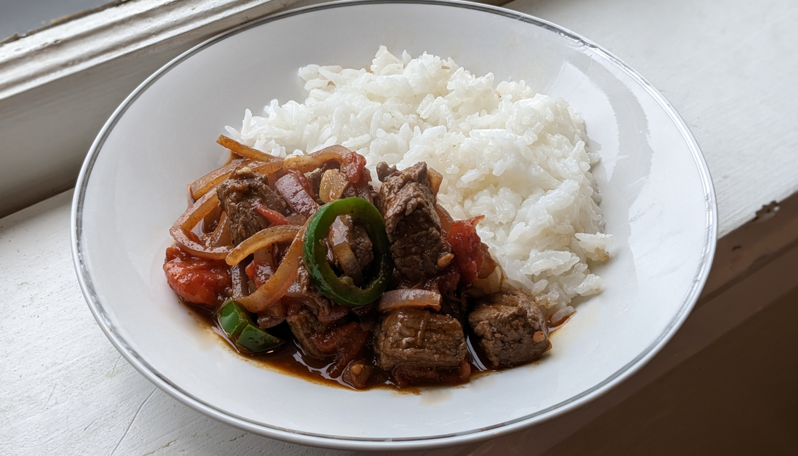

Ethiopian Beef Tibs

Author: Hank Shaw |
Cooked: April 9, 2023
Yields: 4 Servings | Prep Time: 15 Minutes | Cook Time: 10 Minutes
Ingredients
- 1 large red onion, sliced thinly
- 1/4 c. ghee
- 2 lb beef sirloin, cut into 1" cubes
- 2 Tbs berbere
- 1 tsp ground fenugreek
- 1/2 tsp ground ginger
- 1/4 tsp cumin
- 1/4 tsp ground clove
- 1/2 tsp salt
- 1 tsp black pepper
- 3 to 4 garlic cloves, sliced thinly
- 3 jalapeños, sliced into rings
- 2 c. whole peeled tomatoes, broken into bits and strained
- 1/2 c. red wine
Directions
- Prep all ingredients and line them up. This will all come together very quickly.
- Put a wok over high heat on as hot a burner as you have. Stir fry the onions for a few minutes without the butter until they begin to char a little.
- Add the ghee and meat, and stir-fry hot and fast until the outside of the meat is browned while the inside is still rare.
- Add the spices, garlic, and jalapeños. Stir-fry for 1 minute. then add the tomatoes and red wine. Stir to combine and cook for a minute or two.
Additional Notes
- Served with jasmine rice and toasted sourdough bread.
- Traditionally served with injera which I thought would be quick to whip up but involves a 4-5 day fermentation process...
- This recipe was much saucier than what I'm used to from Ethiopian restaurants in Atlanta.